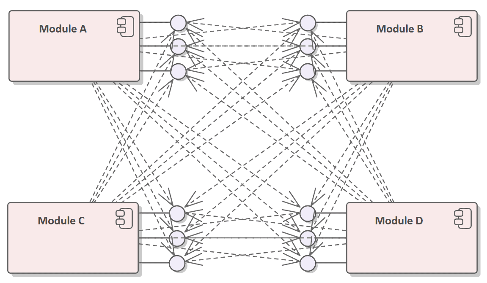
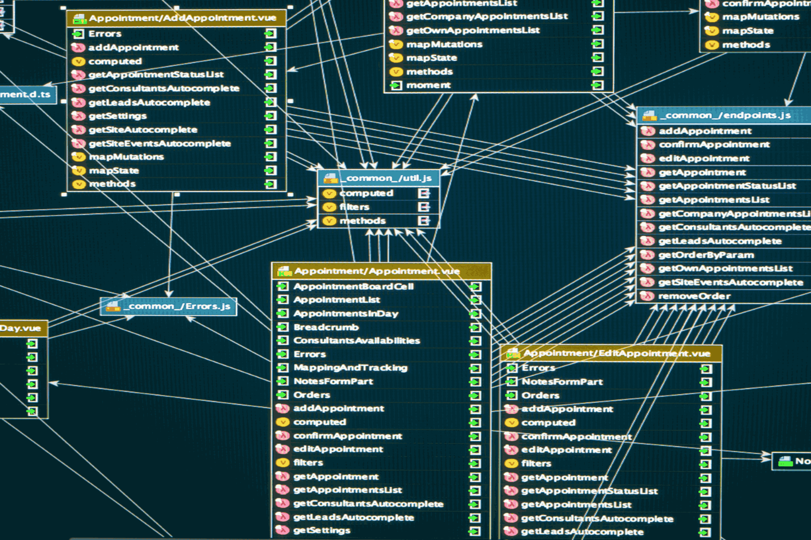

| Palabra con Ñ | Definicion en Español | Definicion en Ingles | Eje. Imagen |
|---|---|---|---|
| 1. Ñapa (Parche informal) - Kludge (or Quick Fix) | Modificación rápida, improvisada y a menudo poco elegante en el código o la base de datos para solucionar un problema urgente sin resolver la causa raíz. | A quick, improvised, and often inelegant modification in code or a database to fix an urgent problem without solving the root cause. | |
| 2. "Ñoño" de datos (Científico/Analista de datos) - Data Nerd (Data Scientist) | Jerga informática para referirse al especialista con un conocimiento profundo, obsesivo y técnico en la estructuración, modelado y análisis de bases de datos complejas. | Slang used to describe a specialist with deep, obsessive, and technical knowledge in structuring, modeling, and analyzing complex databases. | |
| 3. Ñandú (Servidor Ñandú) - Nandu Server (Distributed Node) | En algunos proyectos de código abierto en Latinoamérica, se utiliza metafóricamente para nombrar a nodos o servidores distribuidos que requieren alta velocidad y ligereza en su arquitectura. | In some Latin American open-source projects, used metaphorically to name distributed nodes or servers that require high speed and lightweight architecture. | |
| 4. Enmañado (Código acoplado) Spaghettified (Highly Coupled Code) | Término coloquial para describir una arquitectura de software donde los componentes están tan enredados y mal estructurados que modificarlos es difícil y propenso a errores. | A colloquial term to describe a software architecture where components are so tangled and poorly structured that modifying them is difficult and error-proney. |  |
| 5. Pestaña (en interfaces de bases de datos) / Tab | Aunque empieza con P, la Ñ es la letra clave en su pronunciación. Elemento visual en herramientas de administración de software y bases de datos (como pgAdmin o DBeaver) que permite organizar múltiples consultas o tablas en una sola ventana. | A visual element in software and database administration tools (like pgAdmin or DBeaver) used to organize multiple queries or tables within a single window. |  |